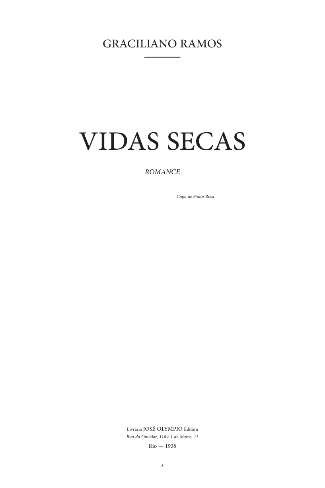

Retirada
A família caminha pela caatinga em busca de água, comida e abrigo.
GET-HUB LITERÁRIO • LITERATURA EnCena 2026
Graciliano Ramos • Romance de 1938
Uma leitura sobre a seca, a sobrevivência, a desigualdade e os sonhos de uma família sertaneja que tenta seguir em frente.

Capa da primeira edição reproduzida no PDF da obra.01 • A HISTÓRIA
Vidas Secas acompanha Fabiano, Sinhá Vitória, os dois filhos e a cachorra Baleia. A família atravessa o sertão nordestino em busca de água e de um lugar onde possa sobreviver. Depois de encontrar uma fazenda abandonada, Fabiano consegue trabalho como vaqueiro e a família permanece ali por algum tempo.
A vida, porém, continua marcada pela seca, pela pobreza, pela pouca possibilidade de estudo e pelas injustiças. Fabiano sofre com a autoridade do soldado amarelo e com a relação desigual com o patrão. Mesmo assim, a família mantém pequenos sonhos, como ter uma vida mais digna e mandar os meninos para a escola.
Quando a seca volta a apertar, a família deixa a fazenda e segue novamente para o sul, alimentando a esperança de encontrar uma vida diferente. O final retoma o ciclo de migração e mostra que a busca por sobrevivência continua.
A família caminha pela caatinga em busca de água, comida e abrigo.
Fabiano encontra trabalho e a família tenta construir uma rotina.
Surge a exploração econômica e a violência da autoridade.
A seca retorna e a família parte outra vez, levando novos sonhos.
02 • QUEM ESCREVEU
03 • CONTEXTO LITERÁRIO
Vidas Secas é geralmente estudado como parte da segunda fase do Modernismo brasileiro, marcada por forte presença da realidade social brasileira. Na obra, o espaço sertanejo, a pobreza, a seca, a desigualdade e as relações de poder fazem parte do conflito narrativo.
04 • ELEMENTOS DA NARRATIVA
Vaqueiro e pai de família. É trabalhador, vive em condições precárias e muitas vezes se sente inferior diante das autoridades e dos proprietários.
Mulher de Fabiano. Prática e esperançosa, imagina uma vida mais digna para a família e sonha com mudanças para os filhos.
As duas crianças aparecem sempre curiosas, mas crescem em um ambiente de pobreza, silêncio e pouca oportunidade de educação.
A cachorra é tratada como parte da família e recebe destaque especial. Seus sentimentos e pensamentos aproximam o leitor da realidade do grupo.
Representa a autoridade que humilha e agride Fabiano, mostrando como o poder pode ser exercido de forma injusta.
É o dono da fazenda e mantém com Fabiano uma relação de dependência econômica marcada pela desigualdade.
05 • LEITURA CRÍTICA
A natureza interfere diretamente na vida da família, que precisa migrar para continuar existindo.
A dependência de Fabiano em relação ao patrão mostra uma estrutura social em que as oportunidades são muito diferentes.
A dificuldade de Fabiano para se expressar ajuda a mostrar como a falta de estudo também limita sua capacidade de defesa.
Sinhá Vitória imagina uma vida com mais estabilidade e deseja um futuro diferente para os filhos.
“O mundo é grande.”
— ideia presente na esperança de Fabiano e Sinhá Vitória no final da narrativa.06 • POR QUE A OBRA AINDA IMPORTA?
Mesmo sendo uma obra de 1938, Vidas Secas continua permitindo discutir problemas presentes na sociedade, como desigualdade social, acesso à educação, dificuldades econômicas e deslocamentos causados por condições de vida.
A história mostra como condições sociais e econômicas podem limitar escolhas, mas também como a esperança de uma vida melhor pode continuar existindo mesmo em situações difíceis.
07 • INTERATIVIDADE
10 questões sobre enredo, personagens, autor, contexto e temas.
08 • REFERÊNCIAS
Obra-base: RAMOS, Graciliano. Vidas Secas. 1938. PDF fornecido para o trabalho.
Pesquisa complementar: Academia Brasileira de Letras — materiais sobre Graciliano Ramos e Vidas Secas.
Pesquisa complementar: Itaú Cultural — biografia e trajetória literária de Graciliano Ramos.